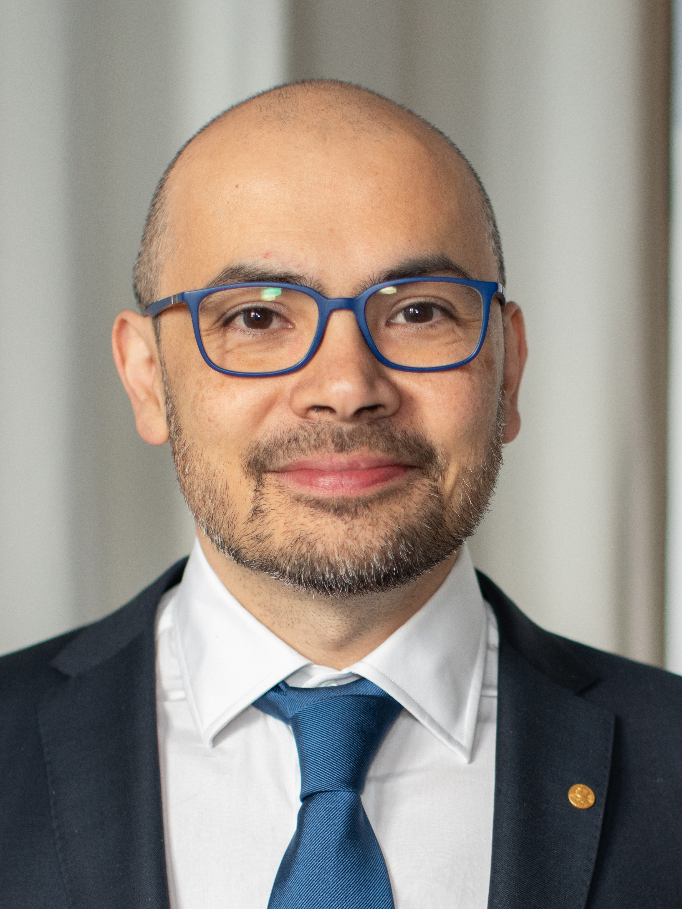

תעודת זהות
חברה מייצגת: Google DeepMind
תפקיד מרכזי: מנכ״ל Google DeepMind
תחום: למידת חיזוק, מדע חישובי, מודלי AI מתקדמים
AI Research Leader

חוקר, יזם ומייסד־שותף של DeepMind, מן הדמויות החשובות ביותר בחיבור בין AI, מדע, משחקים ולמידת חיזוק.
חברה מייצגת: Google DeepMind
תפקיד מרכזי: מנכ״ל Google DeepMind
תחום: למידת חיזוק, מדע חישובי, מודלי AI מתקדמים
הסאביס מזוהה עם הישגים כמו AlphaGo ו־AlphaFold, שהראו כיצד AI יכול להשפיע גם על משחקים מורכבים וגם על מחקר מדעי.